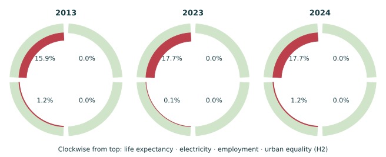

Research working paper • Evidence cut-off 29 October 2026
Building a defensible longitudinal Doughnut
Measurement, fixed benchmarks, source projections and policy inference: an applied Argentina protocol
Abstract
A longitudinal Doughnut can help compare social and ecological outcomes around a policy transition only if it preserves measurement definitions, benchmark choices, data vintages and uncertainty. Argentina provides a demanding example: urban poverty statistics have a publication break, internationally reported inequality refers to second-semester urban surveys, carbon accounts have unequal endpoints, and a material-flow database includes projected inputs in apparently historical recent years. This paper specifies and applies an auditable protocol for a partial country portrait. It produces a four-sector social benchmark view and a separate ecological evidence panel, rather than filling a complete Doughnut with unsupported estimates. Policy dates are represented as chronology. No counterfactual policy effect is estimated.
1. Research question and unit of analysis
The empirical question is how selected social foundations and ecological pressures changed during 2013–2023 and in all eligible released periods after the 10 December 2023 inauguration. Macri’s 2015 inauguration is an independent milestone within the baseline decade. The working temporal interpretation is provisional and can be changed without changing any observation. Neither administration dates nor the phrase “rightward shift” is an outcome variable.
The unit of analysis is an indicator-period-geography-method-vintage combination. “Argentina, 2023” alone is insufficient. Life expectancy is a national calendar-year population estimate; poverty is a semester survey estimate for 31 urban agglomerations; the internationally reported Gini is a second-semester urban income survey. Treating all three as a nationally representative annual panel would change the question and overstate comparability. Life-expectancy metadata; INDEC half-year table; PIP survey-period and coverage metadata.
2. Published frameworks and the boundary of this adaptation
Fanning et al.’s national historical study covers 1992–2015 and provides 2016–2050 business-as-usual projections. Its spreadsheet is a valuable reference, but a 2023 row in a BAU sheet is a forecast from that earlier analysis, not a subsequently observed 2023 outcome. The present extraction imports only the two original historical sheets into a separate reference artifact, and still notes that some values within those sheets rely on original projected or repeated inputs. Modern data are assembled independently and never spliced into the publication’s normalized ratios. Original supplementary data; Original supplementary methods (nutrients pp.2–3 and HANPP p.3 in the supplement’s own numbering).
Fanning and Raworth’s 2025 global monitor uses global time-series indicators over 2000–2022 and a national environmental-footprint comparison for 2017. Its national comparison does not create annual national observations for Argentina. Further, global processes such as atmospheric CO₂ concentration cannot be assigned to a country simply by relabelling a chart. Any allocation of planetary limits requires a stated sharing principle, appropriate footprint accounts and a boundary definition. Fanning and Raworth (2025) (Methods and inequalities sections).
The current benchmark view therefore retains only four source-supported social sectors, with fixed published thresholds held invariant across modern years. It is a partial country portrait with mixed coverage, not an updated complete national Doughnut. Ecological indicators remain in native units without invented national ceilings. A PM2.5 health-exposure guideline, for example, would be a different kind of benchmark from a national allocation of the planetary aerosol boundary.
3. Source acquisition and reproducibility
Sources are primary statistical tables, official API responses, producer methodological documents, peer-reviewed primary analyses and official legal or institutional records. World Bank WDI is a distribution channel for several upstream producers; two pages reproducing its values are not independent corroboration. GCB consumption and territorial accounts also share a production system and must not be counted as two independent measurements of the same concept.
Every admitted source has an exact requested and resolved URL, publisher, archived relative path, byte count, retrieval timestamp and SHA-256 digest. A release date is recorded when established; unknown release dates remain null. WDI’s API-level last-updated date is recorded separately and is not assigned as the original release date of each historical observation. The archive also preserves unsuccessful ICOS retrievals as access-page evidence, explicitly excluding them from numerical extraction. The successful GCB publisher-site workbook is identified as its own preliminary vintage, rather than pretending to have obtained the inaccessible final ICOS workbook.
The extraction script runs locally against the archived bytes. It parses INDEC XLS tables with xlrd, GCB and published reference XLSX tables with openpyxl, WDI/PIP JSON using native JSON parsing, and UNEP’s CSV export using a CSV parser. It performs no network requests, interpolation, imputation or policy-effect inference. Human-written prose cites these source documents; the exact extracted rows and cells remain machine-readable. The shared application validator independently checks schema, identifiers, period shapes, dates, missing-value reasons, paths and source hashes.
| Artifact | Purpose |
|---|---|
| portrait-series.json | Versioned main evidence bundle, native units, fixed target metadata, dated events and source references |
| endpoints.json | First available, last pre-2024 reference and latest eligible observation for each indicator |
| modeled-reference.json | UNEP 2020–2024 source outputs containing projected inputs; excluded from empirical history |
| published-historical-reference.json | Original Argentina 1992–2015 normalized publication data, with source-specific methodological caveats |
| sources.json | Exact URLs, primary archive paths, release-date gaps, retrieval times and content hashes |
| build_dataset.py | Deterministic source-table extraction and arithmetic |
4. Admissibility, epistemic status and missing data
An empirical-history value must be a source-supported observation or retrospective statistical estimate for a completed observation period. Survey estimates, demographic models, accounts and satellite-derived estimates are all estimates; the presence of uncertainty does not make them policy forecasts. Each available modern row is labelled retrospective-estimate with status source-supported-observation. Missing rows retain a null value, missing status and explicit reason. Nulls never become zeros.
Projection-contaminated material-flow values are handled differently. UNEP’s linked technical annex says projected components enter from 2020 and recommends 2019 as the last year for correlation analysis. The portal’s 2024 numerical endpoint is therefore not sufficient to admit that value as a measured post-policy outcome. Main material-footprint history ends in 2019; 2020–2024 values are retained separately, labelled as source model outputs with a usage restriction. This is a substantive result of the methods review, not a claim that material use stopped being important. UNEP technical annex (printed p.6 and pp.34–35).
No full-year 2026 observation is manufactured, and no incomplete 2026 year is compared with a completed annual estimate as though they were the same interval. Monthly CPI, semester poverty and annual national accounts retain their own frequencies. A year selector can display a year’s available sectors, but it must show which period and coverage each sector uses and leave unavailable sectors unknown.
5. Four-sector benchmark mathematics
Let x be a social indicator in its native higher-is-better scale, and T its fixed published threshold. This adaptation reports the ratio r=x/T and benchmark-relative shortfall s=max(0,1−r). A sector meets the benchmark when x≥T. Employment is explicitly 100−ILO unemployment; equality is explicitly 100−Gini. The four thresholds are 74 years, 95%,94% and 70 points, respectively. None is re-estimated from the selected year’s distribution. Published national benchmarks (Table 1).
This is not the original authors’ social normalization. Their procedure subtracts the lowest globally observed 1992–2015 value before dividing by the distance from that minimum to the threshold. Both procedures classify threshold attainment identically, but shortfall magnitudes differ. The modern benchmark-relative ratios must therefore be labelled as this adaptation’s arithmetic and never joined directly to the archived publication ratios. There is no averaging of social deficits into a welfare score, and no netting of a social improvement against an ecological deterioration. Original normalization (Methods, printed author-manuscript p.10).
| Sector | Fixed threshold | 2013 value | 2023 value | 2024 value | 2024 benchmark-relative gap |
|---|---|---|---|---|---|
| Life expectancy at birth | 74 | 75.829 | 77.395 | 77.543 | 0.000% of benchmark |
| Access to electricity | 95 | 99.300 | 100.000 | 98.400 | 0.000% of benchmark |
| Labour force employed (100 − unemployment) | 94 | 92.900 | 93.861 | 92.850 | 1.223% of benchmark |
| Income equality (100 − urban Gini) | 70 | 58.900 | 57.600 | 57.600 | 17.714% of benchmark |
Values in the producer’s native scale. Equality uses H2 urban surveys; other sectors use national calendar-year estimates. A zero gap means the selected benchmark was met, not universal absence of deprivation.
The actual four-sector results illustrate a limitation of the framework view. Both 2023 and 2024 meet the electricity benchmark, although the source estimate declines from 100% to 98.4%. A binary threshold can hide change above a standard, which is why native values are always displayed. Conversely, urban equality is 57.6 points in both years at WDI precision, corresponding to a 17.714% benchmark-relative shortfall in this adaptation, while employment’s relative gap rises from 0.148% to 1.223%. These are transparent index calculations, not percentages of residents deprived.

6. Geography and statistical-production breaks
INDEC stopped publishing the poverty series in H2 2013 and resumed with Q2 2016. That quarter is not silently substituted for H1 2016. The comparable full-semester table begins in H2 2016. The source’s caution about 2007–2015 statistics remains attached to affected earlier inequality reference years. H2 2019 excludes Gran Resistencia, while H2 2020 excludes Ushuaia–Rio Grande; those periods carry their own coverage flags and comparability groups. COVID-era collection changes are also identified. Lines break at missing periods, flagged discontinuities and changes of comparability group. INDEC publication and method notice; Official historical workbook (Cuadro 1 footnotes).
The World Bank’s “annual” Argentina Gini label is a reporting-year convention. PIP identifies the underlying observation as EPHC-S2, an urban second-semester survey, so the modern bundle represents it as an H2 observation and leaves H1 unknown. WDI’s one-decimal Gini is retained instead of replacing it with PIP’s unrounded value; PIP supplies the period and coverage evidence. This separates revision and rounding choices from geography. PIP source metadata; WDI published Gini precision.
7. Ecological definitions and denominator arithmetic
The Global Carbon Budget workbook reports million tonnes of carbon per year. Its specified conversion factor is 3.664, so the reproduced fossil CO₂ total is MtCO₂=MtC×3.664. The derived per-person series is tCO₂/person=MtCO₂×10⁶/WDIpopulation, using one retrieved population vintage. Each row records the original workbook cell and population source. No land-use-change emissions or non-CO₂ gases are added or implied. The 2023 territorial and consumption accounts are 178.407 and 185.666 MtCO₂, respectively; only the territorial account has a 2024 value in this workbook. GCB workbook (sheet headers and Argentina column I); Population denominator.
Forest-stock share is not the share of original forest retained, native-forest deforestation, or a biodiversity footprint. PM2.5 is national population-weighted exposure, not a national aerosol-boundary allocation. Water stress is freshwater withdrawal relative to available resources after environmental flow requirements, not a consumption-based water footprint. Renewable final energy is not renewable electricity. Keeping these definitions attached prevents an apparent multidimensional dashboard from comparing different concepts under familiar labels.
Benchmark selection itself has a time dimension. In the original national study, material and other flow boundaries change with global population. Its CO₂ boundary is a country’s population-weighted share of cumulative emissions before the 350 ppm boundary was crossed, not a fixed annual tonnes-per-person quota. The modern bundle assigns no such quota. Holding a published social threshold fixed is a declared comparison choice; inventing an annual national carbon limit would be an unsupported change of method. National boundary methods (climate section and material-footprint section).
8. Descriptive changes and uncertainty
For comparable native values, absolute change is Δ=x₁−x₀ and relative change is 100×(x₁/x₀−1), when the baseline is nonzero. Percentage-valued rates are reported in percentage points for absolute change. Poverty 41.7% to 32.3% is a decline of 9.4 percentage points, not 9.4%. The full semester sequence is displayed to avoid making the 2024 peak the only baseline. Same-semester comparisons are shown alongside adjacent-semester changes to expose seasonality.
INDEC supplies 90% confidence intervals for recent poverty and indigence estimates. The latest poverty point estimate rises 0.7 points year-on-year, but the producer reports no statistically significant change. This judgement is cited directly. The methods do not infer significance from rounded point estimates or fabricate confidence intervals for WDI series that do not provide them. Nor do they treat the digits in modelled estimates as a measure of certainty. INDEC uncertainty and change statement (printed pp.4–5).
9. What the policy visualization can and cannot show
The chronology distinguishes election, inauguration, policy publication and contextual shocks. A decree’s publication is not evidence that every provision was immediately implemented or survived later judicial review. Observation periods are interval marks; a yearly point is not placed on an inauguration date. The drought marker identifies a documented bulletin period rather than inventing a single shock-onset day. Tooltips and accessible tables retain exact dates and source locators.
The visualization may show paths from a policy to an outcome as qualitative hypotheses, but it must identify them as such. It must not draw a numerical projected effect without a specified model, counterfactual, units, horizon and uncertainty. No numeric policy-effect estimates were established in this research. Source projections, such as UNEP’s recent material outputs or the original Doughnut BAU scenario, remain in separate reference artifacts and cannot fill missing outcome data.
A credible causal extension would need a pre-specified treatment definition, relevant anticipation and implementation dates, a defensible counterfactual, stable measurement and enough post-treatment observations. A before/after regression using one country cannot by itself distinguish fiscal changes, monetary and exchange policy, drought recovery, world commodity prices, COVID recovery, demographic changes or concurrent programmes. Cross-country controls would need a documented comparison design and sensitivity checks; an interrupted series would need credible assumptions about underlying trends and concurrent shocks. This paper supplies the measurement foundation for such work, not its unearned conclusions.
10. Verification, remaining gaps and update protocol
The delivered bundle contains 26 indicators, 696 period rows and 205 explicit nulls in its first complete version. Deterministic checks verify source hashes, finite numeric values, unique indicator-period keys and valid references. A separate core-schema review has checked the actual data structure and chronology. Independent source checks reproduced the poverty estimates and confidence intervals, the source-owned significance statement, published benchmark thresholds and normalization, and the material-flow projection cutoff. A separate recomputation checked 221 WDI or derived rows and 52 carbon rows against archived inputs. These checks support this descriptive working manuscript; they do not constitute journal peer review or causal validation.
Unresolved limits are explicit: no comparable 2013–2015 poverty history, incomplete post-2023 consumption accounts and air exposure, no current basic-water/sanitation observation in the retrieved WDI series, projected recent material inputs, unresolved interpretation of the 2024 electricity revision/decline, and no complete assessment of housing, political voice, gender equality, social support, biodiversity or novel entities. A reported direction of improvement in the measured subset is not proof of overall Doughnut improvement.
An update should add a new dated archive and regenerate the extraction from that vintage, recording any historical revisions. It should never overwrite a missing point with a forecast, silently change the fixed benchmark, or use a new source definition only for the post-period. For a different political turning point, the same observations can be re-windowed while keeping the event chronology, benchmark version and source records intact. The practical contribution is a transparent distinction between what changed, what remains unknown and what would be required to attribute change to policy.